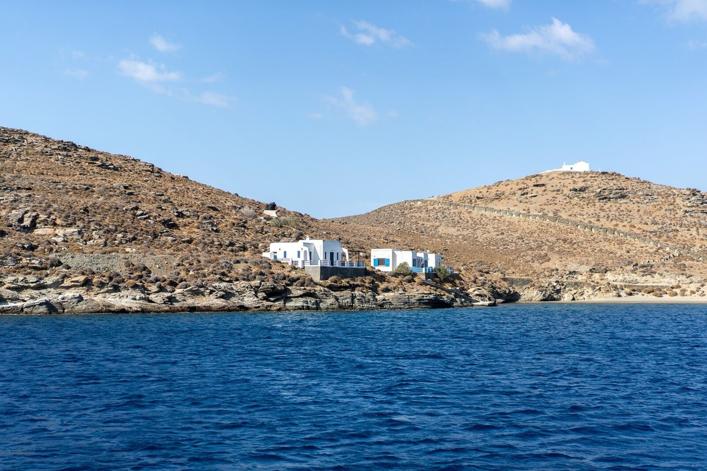
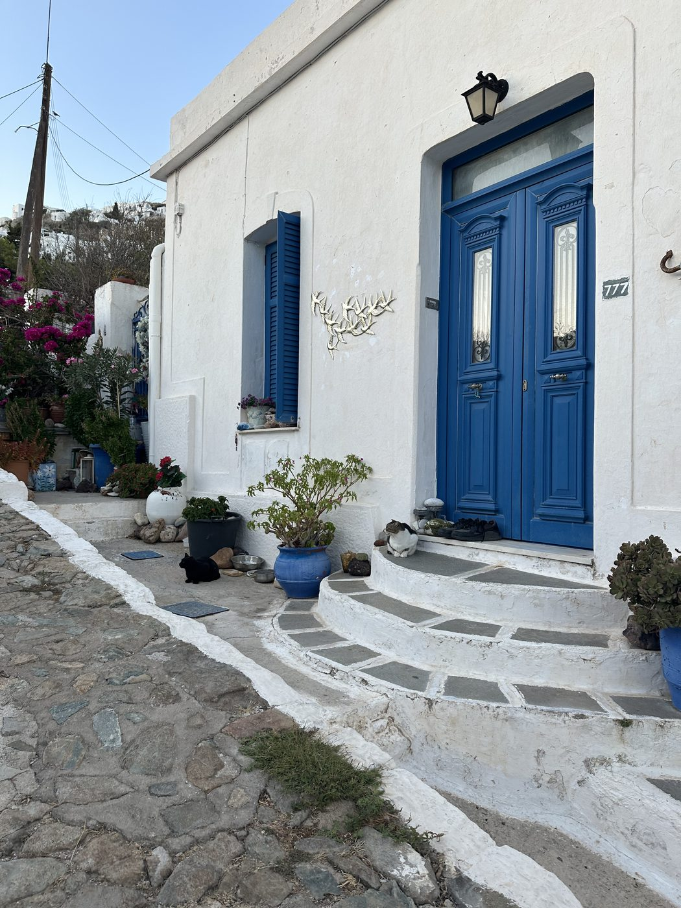
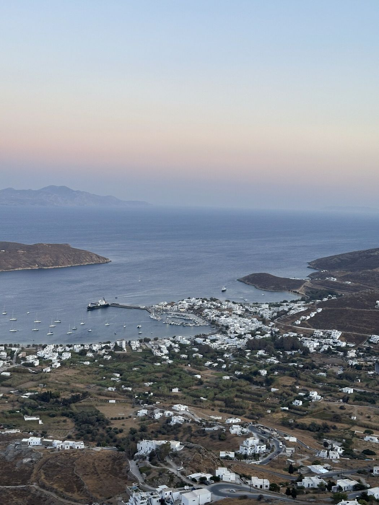
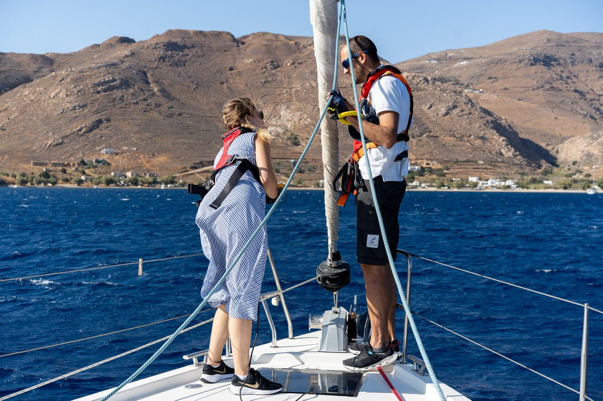
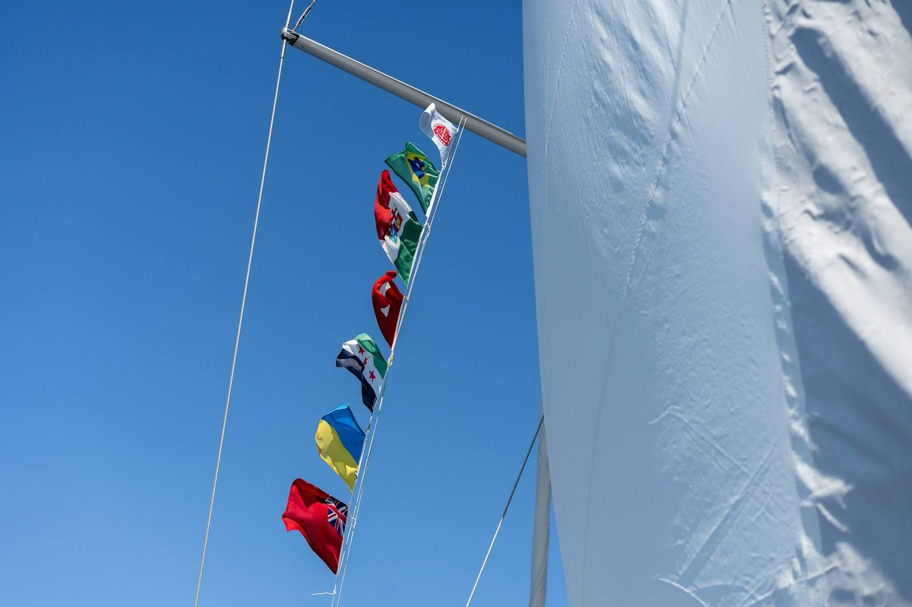
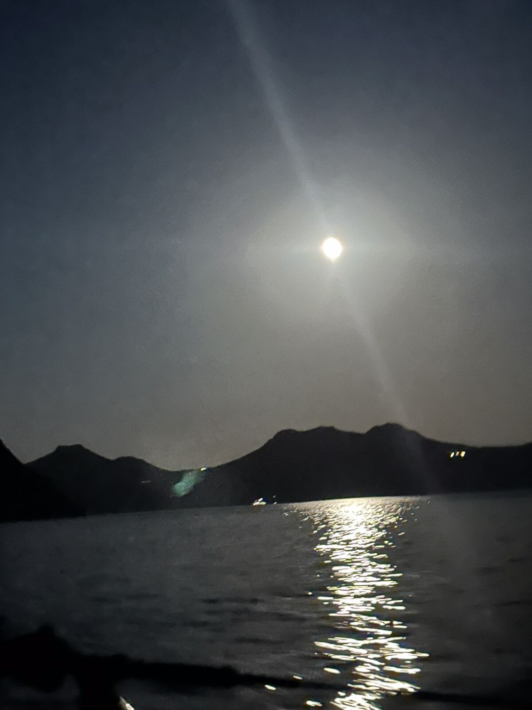
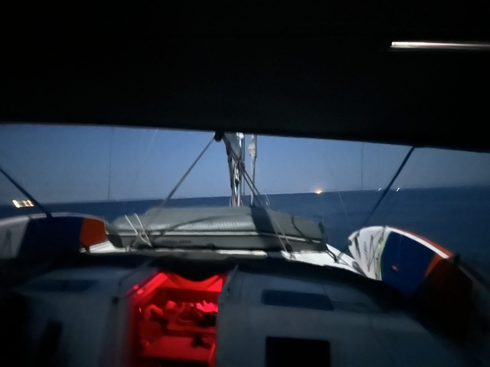
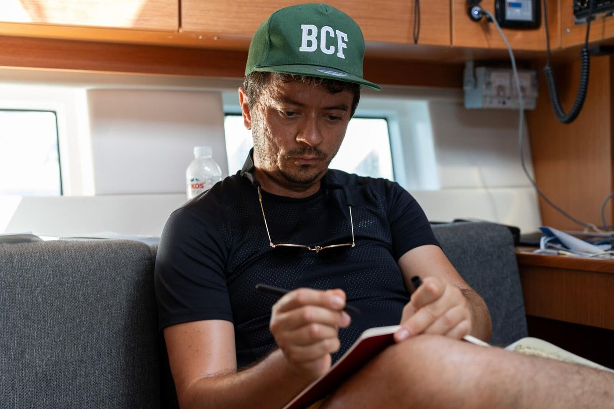
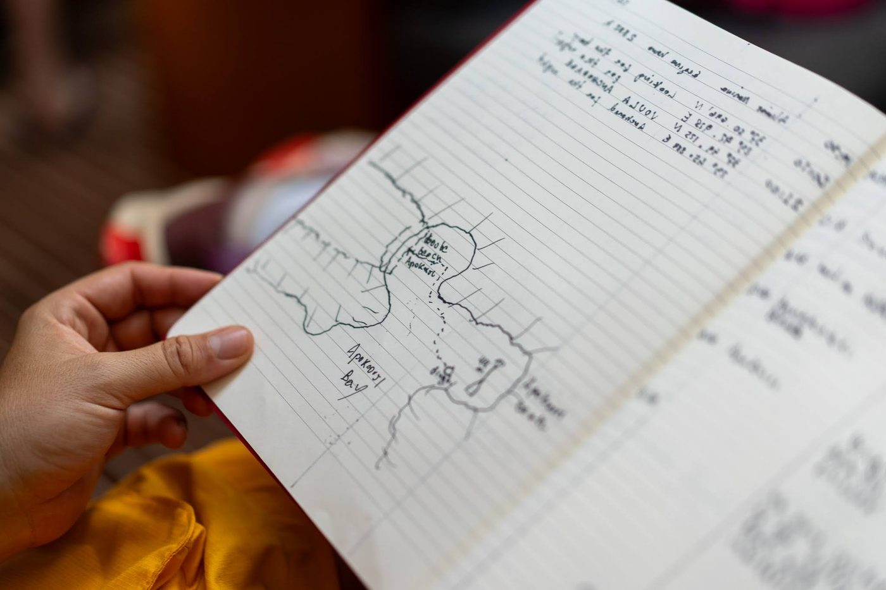
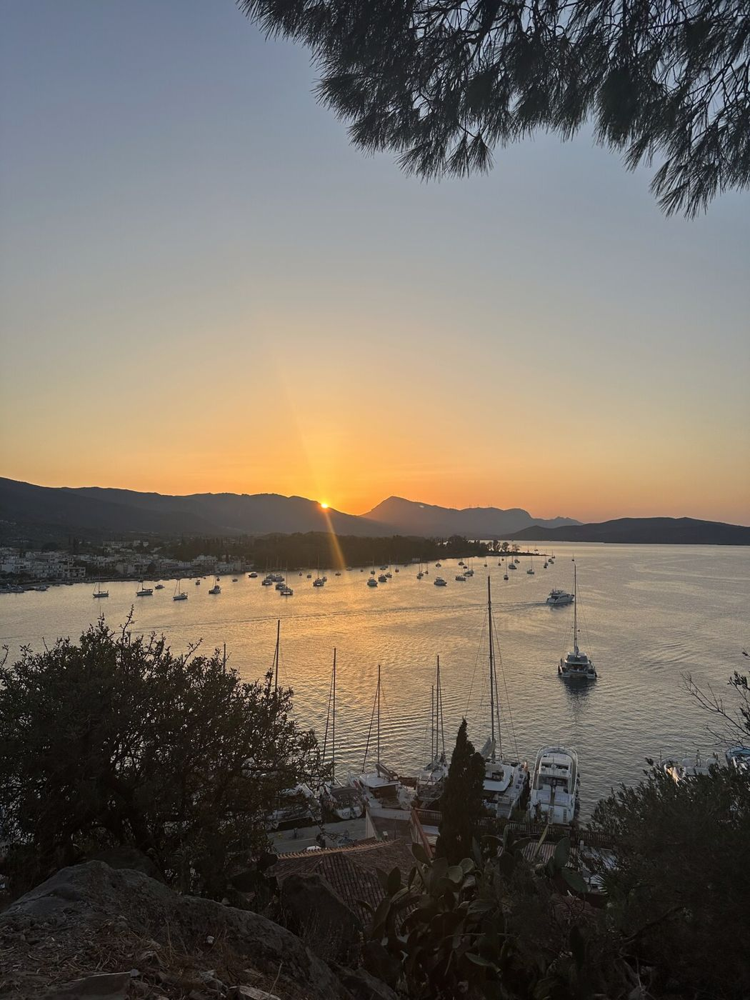

Serifos to Athens, 2025De Serifos a Atenas, 2025De Sérifos à Athènes, 2025
- BaseBaseBase
- AthensAtenasAthènes
- Longest legPerna mais longaPlus longue étape
- Serifos to Poros, overnightSerifos a Poros, de noiteSérifos à Poros, de nuit
No plotter track this time. The dashed line joins, in order, the places where my phone took photos, so it shows the sequence of the trip rather than the course we sailed. The first stretch, from Athens to Serifos, only shows that we started there. The dark stretch is the night passage, from photos taken between 9 pm and 2:30 am.Desta vez não há trajeto do plotter. A linha tracejada liga, em ordem, os lugares onde meu celular tirou fotos, e mostra a sequência da viagem, não o rumo navegado. O primeiro trecho, de Atenas a Serifos, só indica que partimos de lá. O trecho escuro é a travessia noturna, a partir de fotos tiradas entre 21 h e 2h30.Pas de trace du traceur cette fois. La ligne pointillée relie, dans l'ordre, les lieux où mon téléphone a pris des photos : elle montre l'enchaînement du voyage, pas la route suivie. Le premier tronçon, d'Athènes à Sérifos, indique seulement notre point de départ. Le tronçon sombre est la traversée de nuit, d'après des photos prises entre 21 h et 2 h 30.
In September 2025 we left from a marina in Athens and sailed out to the western Cyclades, then back through the Saronic Gulf. A crewmate brought a proper camera, so many of the photos on this page are better than mine.
Serifos
My photos start in Serifos, a rocky island once known for its iron mines. We sailed along its bare, brown coast, past chapels and small white farms, into the bay of Livadi. On the evening of 8 September we walked up from the harbour to the Chora, a white village piled on the top of the hill, with blue doors and steep lanes, and watched the sun go down behind the other islands.
Em setembro de 2025 saímos de uma marina em Atenas e velejamos até as Cíclades ocidentais, voltando pelo Golfo Sarônico. Um colega de tripulação levou uma câmera de verdade, então muitas fotos desta página são melhores que as minhas.
Serifos
Minhas fotos começam em Serifos, uma ilha rochosa conhecida antigamente pelas minas de ferro. Velejamos ao longo da costa marrom e nua, passando por capelas e pequenos sítios brancos, até a baía de Livadi. Na noite de 8 de setembro subimos a pé do porto até a Chora, uma vila branca empilhada no alto do morro, com portas azuis e vielas íngremes, e vimos o sol se pôr atrás das outras ilhas.
En septembre 2025, nous sommes partis d'une marina d'Athènes vers les Cyclades occidentales, avant de revenir par le golfe Saronique. Un équipier avait apporté un vrai appareil photo : beaucoup des photos de cette page sont meilleures que les miennes.
Sérifos
Mes photos commencent à Sérifos, une île rocheuse autrefois connue pour ses mines de fer. Nous avons longé sa côte brune et nue, devant des chapelles et de petites fermes blanches, jusqu'à la baie de Livadi. Le soir du 8 septembre, nous sommes montés à pied du port jusqu'à la Chora, un village blanc perché au sommet de la colline, aux portes bleues et aux ruelles raides, et avons regardé le soleil se coucher derrière les autres îles.



A night passage under the moon
On the 9th we spent the day in and around Livadi, working on the boat and cooking on deck. In the evening we left for the longest leg of the week, west across open water towards the Peloponnese. The moon, two days after the total lunar eclipse of 7 September, was still almost full and lit the sea all night.
We kept watches with only the red lights on in the cockpit to keep our night vision, checked our position on the plotter and wrote the log by hand. One of the crew kept a notebook with a sketch of the route.
Uma travessia noturna sob a lua
No dia 9 ficamos em Livadi e arredores, cuidando do barco e cozinhando no convés. À noite saímos para a perna mais longa da semana, para oeste em mar aberto, rumo ao Peloponeso. A lua, dois dias depois do eclipse lunar total de 7 de setembro, ainda estava quase cheia e iluminou o mar a noite inteira.
Fizemos turnos de vigia só com as luzes vermelhas acesas no cockpit para preservar a visão noturna, conferimos a posição no plotter e escrevemos o diário de bordo à mão. Um dos tripulantes levava um caderno com um esboço da rota.
Une traversée de nuit sous la lune
Le 9, nous sommes restés à Livadi et dans les environs, à bricoler sur le bateau et à cuisiner sur le pont. Le soir, départ pour la plus longue étape de la semaine, plein ouest en mer ouverte vers le Péloponnèse. La lune, deux jours après l'éclipse totale du 7 septembre, était encore presque pleine et a éclairé la mer toute la nuit.
Nous avons tenu des quarts avec seulement les feux rouges allumés dans le cockpit pour garder la vision de nuit, vérifié notre position sur le traceur et tenu le livre de bord à la main. Un équipier avait un carnet avec un croquis de la route.






Poros and the Saronic Gulf
We reached Poros on the 10th. The town climbs a small hill with a clock tower at the top, and the channel in front of it, which separates the island from the Peloponnese, is so narrow that the little ferries seem to pass through the restaurants. We watched the sun set over the anchored boats from the hill.
On the 11th we sailed north into the Saronic Gulf, and the morning of the 12th found us off Aegina. That evening we were back at Alimos marina, in Athens. The last evening, the 13th, was on Lycabettus hill, watching the sun set over the city and the sea we had just crossed.
Poros e o Golfo Sarônico
Chegamos a Poros no dia 10. A cidade sobe um pequeno morro com uma torre do relógio no topo, e o canal em frente, que separa a ilha do Peloponeso, é tão estreito que as pequenas balsas parecem passar dentro dos restaurantes. Vimos o sol se pôr sobre os barcos ancorados, do alto do morro.
No dia 11 velejamos para o norte, no Golfo Sarônico, e a manhã do dia 12 nos encontrou perto de Egina. À noite estávamos de volta à marina de Alimos, em Atenas. A última noite, dia 13, foi no monte Licabeto, vendo o sol se pôr sobre a cidade e o mar que tínhamos acabado de atravessar.
Poros et le golfe Saronique
Nous sommes arrivés à Poros le 10. La ville grimpe sur une petite colline coiffée d'une tour de l'horloge, et le chenal devant elle, qui sépare l'île du Péloponnèse, est si étroit que les petits ferries semblent traverser les restaurants. Nous avons regardé le soleil se coucher sur les bateaux au mouillage depuis la colline.
Le 11, cap au nord dans le golfe Saronique, et le matin du 12 nous a trouvés au large d'Égine. Le soir, nous étions de retour à la marina d'Alimos, à Athènes. La dernière soirée, le 13, s'est passée sur la colline du Lycabette, à regarder le soleil se coucher sur la ville et sur la mer que nous venions de traverser.

